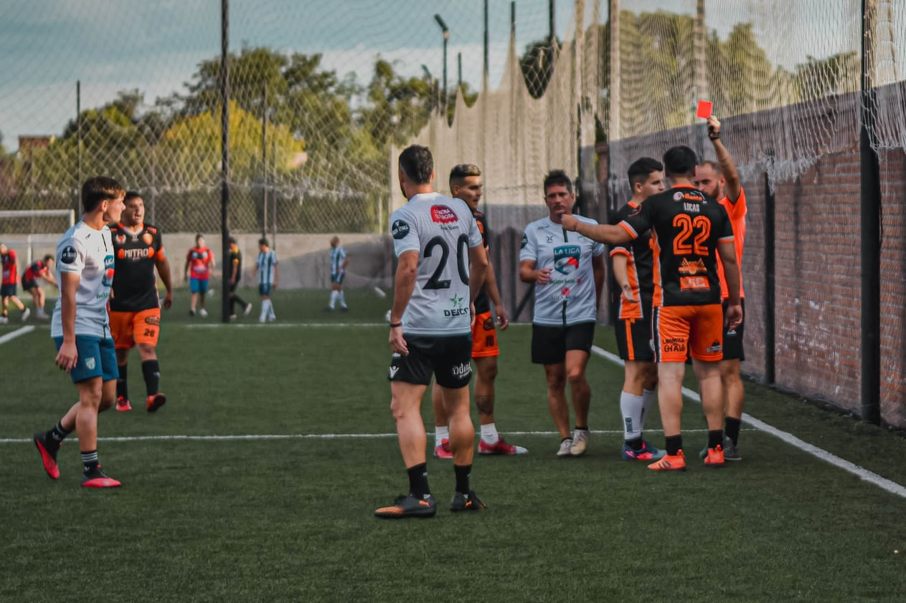

Datos y curiosidades del Club
Historial de participaciones
Pasaron 144 jugadores por la siamo entre todos los torneos disputados, por goles y participaciones en el equipo se destacaron los siguientes:

Curiosidades
Francisco Perez Albert, más conocido como Franki, es el jugador que mas expulsiones y amarillas tiene, 5 expulsiones y 18 amarillas.
Rodrigo Acuña es el que mas goles en contra hizo, realizó 4 tantos en su propia porteria.
Los goleadores del equipo son Pascual Rodriguez con 85 goles, Facundo Sanchez con 58 y Franco Costanzo con 52.

El jugador mas logevo en vestir la casaca de la Siamo es José Luis Robles, conocido como Cole. El guardametas cumplió 36 años. El que le sigue es Piero Juncos con apenas 32.

El mas joven es Benjamin Medina con 18 años recién cumplidos.

Costanzo y Sanchez, ambos delanteros son los jugadores que mas erraron desde el punto penal, cada uno erró en dos oportunidades desde los 12 pasos.

La Siamo hasta la actualidad disputó 265 partidos oficiales, en el historial ganó 113, empató 38 y perdió 114.


El tricolor tiene a favor 796 tantos y en contra 774.
Los jugadores en total han visto la tarjeta amarilla en 253 oportunidades y han sido expulsados en 54.
La primer camiseta se hizo en el 2015, se debutó en el primer torneo con esta camiseta y la realizó la marca Cano


La segunda camiseta fue hecha en 2018, con esta salieron campeones por primera vez y la hizo la marca Casia.


La tercer camiseta la hizo la marca Roy Sport en el año 2019.


La cuarta y quinta camiseta se hicieron en el año 2021, la camiseta negra la hizo la marca Velmart y la naranja Roy Sport, esta ultima por salir campeones en el torneo de la Cañada.


La ultima y sexta camiseta se hizo en el año 2022 de la mano de la marca Deal. Fue el premio por haber ganado en el torneo Las rosas - "the last dance".